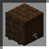
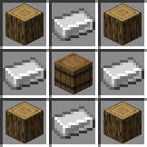

Варильная бочка

-
Инструмент ломания: топор
-
Крафт: есть
-
Тип: инструмент
Блок инструмент, который чем-то напоминает варочною стойку, но совсем немного отличается. Его можно найти в структуре
Остров черепах
или же скрафтить самостоятельно. При помощи него игрок может сварить один из пяти видов алкоголя. В зависимости от выбранного напитка нужно поставить во второй слот несколько единиц ингредиента, а в первый всего лишь бутылку воды. Если рецепт будет верным, то тогда блок приступит к варке и забрав все ингредиенты оставит лишь пустую бутылку в первом слоте. В центре интерфейса блока размещён индикатор готовности алкоголя. Как только полоса будет заполнена, то игрок может положить в третий слот пустую
Кружку
, тем самым набрав в неё напиток и опустошить бочку. Все рецепты алкоголя можно узнать благодаря блоку
Станок рецептов
.
Крафт:

-
Рабочее место: верстак
-
Сложность: лёгкая